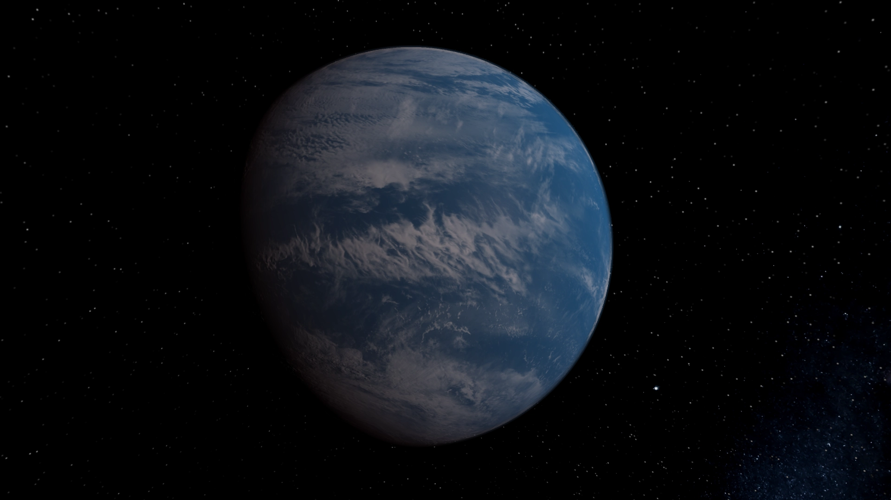

15 min read
GJ 1214b, affectionately known as the Waterworld, represents one of the most intriguing enigmas in the study of exoplanets. Discovered in 2009 orbiting a red dwarf star approximately 40 light-years away in the constellation of Ophiuchus, this planet stands out due to its unique classification and the mysteries that envelop its existence. With a mass nearly 6.5 times that of Earth and a radius approximately 2.7 times larger, GJ 1214b is categorized as a "super-Earth," a type of exoplanet that has no direct counterpart in our solar system.
The composition of GJ 1214b is a subject of intense scientific interest and speculation. Observations suggest that a significant portion of its mass is made up of water, earning it the moniker of a Waterworld. Unlike Earth, where water exists alongside vast continents, GJ 1214b may possess a thick atmosphere composed of hydrogen and helium, with a deep ocean covering its entire surface. This ocean is not like those found on Earth; it could be subjected to high temperatures and pressures, leading to exotic forms of ice or supercritical water, a state where water acts as both a liquid and a gas.
The atmosphere of GJ 1214b offers a window into the planet's potential habitability and the processes that govern its climate. Observational studies, including those conducted by the Hubble Space Telescope, have hinted at a thick, cloud-covered atmosphere, which complicates efforts to determine its exact composition. These clouds prevent clear observations of the planet's surface and lower atmospheric layers, posing a significant challenge to understanding the conditions that prevail on this distant world. Despite these obstacles, the study of GJ 1214b's atmosphere is crucial for unraveling the secrets of water-rich planets and their potential to support life.
GJ 1214b occupies a pivotal role in the field of exoplanetary research, serving as a prototype for water-rich super-Earths. Its study has propelled advancements in observational techniques and theoretical models designed to probe the atmospheres of exoplanets. As technology advances, instruments such as the James Webb Space Telescope are expected to offer unprecedented insights into planets like GJ 1214b, shedding light on their atmospheric composition, weather patterns, and the distribution of their oceans.
Identified by the MEarth Project in 2009
Completes an orbit around its star in about 38 hours.
With a radius about 2.7 times that of Earth's
48 light-years away in the constellation Ophiuchus.
The study of GJ 1214b extends beyond its atmospheric composition and oceanic surface; it also touches on the perennial quest to find extraterrestrial life. The unique conditions on GJ 1214b provide a fascinating case study for astrobiologists, who are keen to understand how life might adapt to environments vastly different from those on Earth. While the high temperatures and pressures of GJ 1214b's ocean may not be conducive to life as we know it, they challenge our understanding of life's potential diversity and resilience. GJ 1214b, with its vast oceans and thick, cloud-laden atmosphere, exemplifies the incredible diversity of worlds that exist beyond our solar system. As we continue to explore these distant planets, each discovery adds to our understanding of the cosmos and our place within it. The study of planets like GJ 1214b not only broadens our knowledge of the physical processes that shape planetary environments but also fuels our imagination about the possibilities of life in the universe. In the grand scheme of cosmic exploration, GJ 1214b represents a tantalizing glimpse into the variety of planets that orbit other stars, reminding us of the endless mysteries waiting to be uncovered in the vast expanse of space.